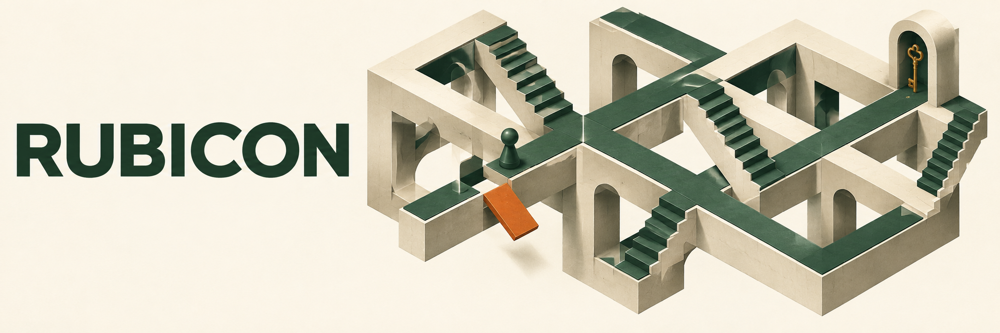
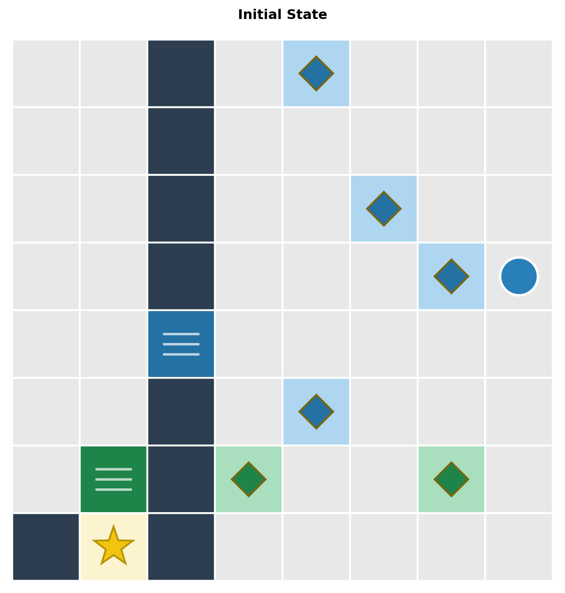
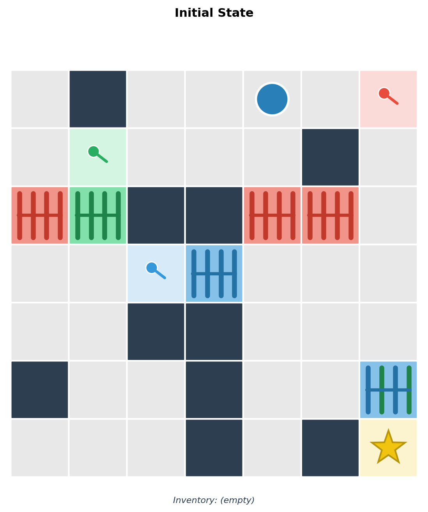
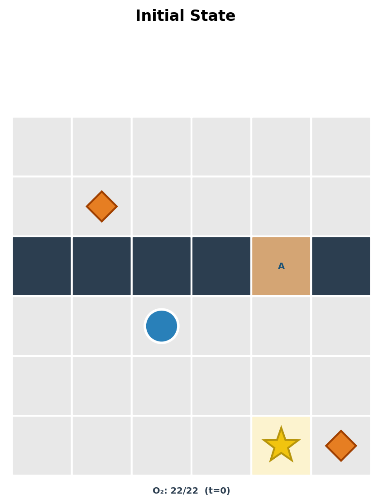

01 / SIMULATION
What happens next?
Follow a specified sequence of actions and predict the resulting state.

One action can close every path to success. RUBICON asks whether models can simulate what happens next, foresee failure, and identify the move that made it inevitable.
Reasoning about a puzzle means understanding both what an action changes and which possibilities it removes. Three task families examine that distinction.
Follow a specified sequence of actions and predict the resulting state.
Reason about whether the goal can still be reached from the current state.
Identify the first action that made successful completion impossible.
Each domain introduces a different irreversible constraint. The images below are actual examples from the released dataset.

Leaving a cell paints it. The path behind you becomes a barrier to returning.

Opening a door consumes keys. Spending them in the wrong place can block the goal.

Every action spends oxygen while the tide changes. Timing and route choices determine what remains reachable.
Each domain has 700 records and 200 images. Related tasks reuse puzzle instances and images; records are not independent puzzle counts. The banner is a conceptual illustration.
Browse images and prompts on Hugging Face, or download the original files using the checksum-verifying tool in the code repository.
from datasets import load_dataset
import json
data = load_dataset(
"ajirs/rubicon",
"mosaic_grid",
split="test",
)
example = data[0]
image = example["image"]
prompt = example["prompt"]
answer = json.loads(example["ground_truth_json"])Choose all, mosaic_grid, chain_vault, or tide_grid. The release provides an evaluation split, with no training split.
The release preserves the original evaluation prompts, images, and answers. A file manifest records checksums for all 624 source data files, and the documentation explains scoring, dependencies, and validation limits.
A reuse license has not yet been assigned to the code or dataset.